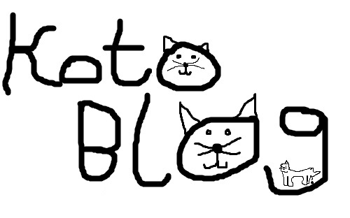

Some time ago, I made 3 YouTube channels,
PolandMan07,
PolandManPlaysMinecraft and
PolandManLikesCats.
 Blog post by Oliwier Troc (PolandMan07)
Blog post by Oliwier Troc (PolandMan07)
4.7.2021 10:45 AM
4.7.2021 10:45 AM
Spring is coming, and my cats go outside more often. Luna once was missing for 5 hours but then we found her outside.
Blog post by Oliwier Troc (PolandMan07)
14.3.2021 1:01 PM
14.3.2021 1:01 PM
18.12.2020 5:36 PM

If you want to do something with KotoBlog, download it, or see its history,
go onto my GitHub!
Blog post by Oliwier Troc (PolandMan07)
12.12.2020 3:51 PM
12.12.2020 3:51 PM
 These are my cats when they were younger, Felix and Luna. I love them, even though Luna broke my 2nd gen iPad's screen
a few days ago.
You just can't get mad at cats.
These are my cats when they were younger, Felix and Luna. I love them, even though Luna broke my 2nd gen iPad's screen
a few days ago.
You just can't get mad at cats.
11.12.2020 7:21 PM (edytowany)
1
Polska wersja
KotoBlog v0.5.5-beta.2 was made by Oliwier Troc (2020 - 2021).